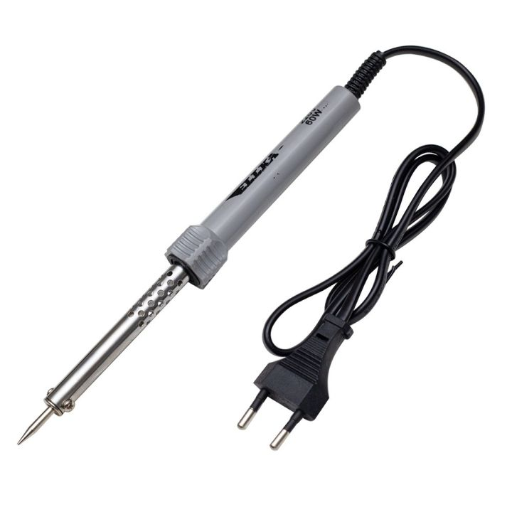
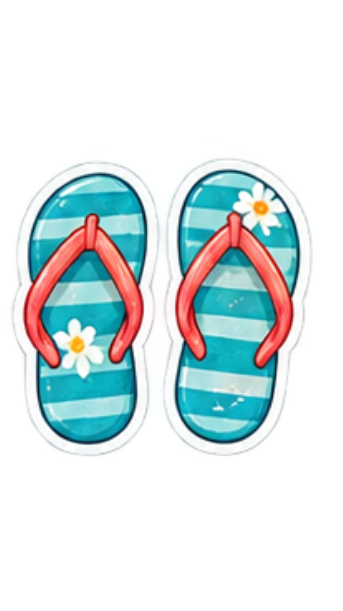
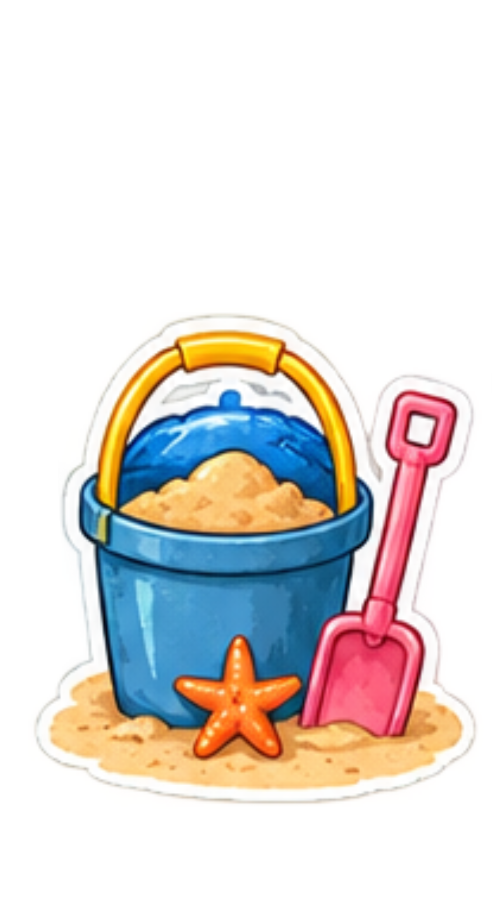
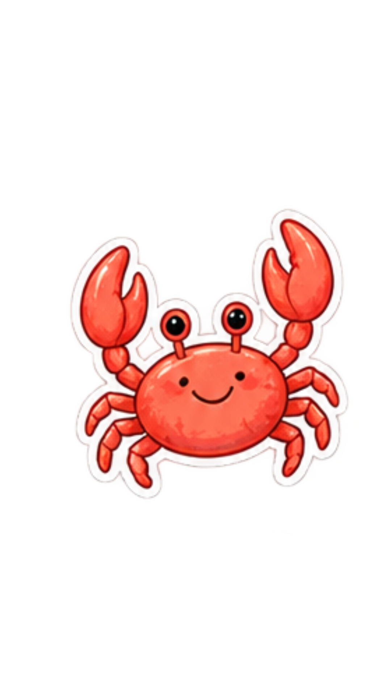
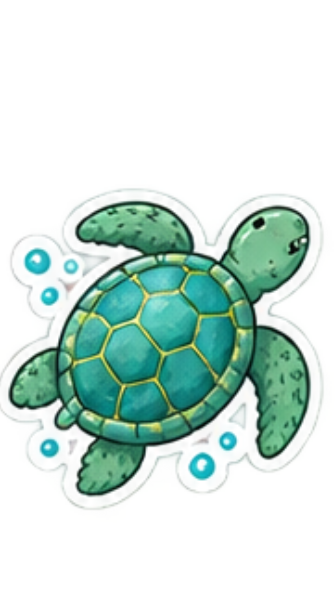

Solder adalah alat yang digunakan untuk memanaskan timah solder
sehingga timah tersebut meleleh dan dapat digunakan untuk menyambung
kaki komponen dengan pad atau jalur pada PCB
Blower dalampraktik elektronika biasanya merupakan alat pemanas
yang menghasilkan udara panas. Alat ini dapat digunakan untuk
membantu melepas atau memasang komponen tertentu, terutama komponen
yang solderannya perlu dipanaskan pada beberapa titik sekaligus.
Unit tersebut berfungsi sebagai pusat pengaturan alat. Solder dan blower terhubung ke unit ini, kemudian pengguna dapat mengatur parameter seperti suhu, hot air, biasanya juga aliran udara (airflow) sesuai kebutuhan.
| Fitur | Fungsi |
|---|---|
| Power/ON-OFF | Menyalakan dan mematikan unit |
| Display/Layar | Menampilkan informasi pengaturan seperti sushu dan parameter lainnya |
| Pengatur Suhu Solder | Untuk menaikkan atau menururkan suhu pada alat solder |
| Pengatur Suhu Blower | Untuk menaikkan atau meurunkan suhu pada blower |
| Pengatur Airflow | Mengatur banyaknya atu kekuatan aliran udara yang keluar dari blower |
| Tombol Mode Solder | Mengaktifkan atau mengatur fungsi solder terhubung ke station |
| Tombol/Mode Hot Air/Blower | Mengaktifkan atau mengatur fungsi blower |
| Konektor Solder | Tempat menghubungkan kabel solder ke unit |
| Konektor Blower | Tempat menghubungkan kabel blower ke unit |
| Knob/Tombol Pengaturan | Untuk mengubah nilai pengaturan sesuai kebutuhan |
| Pegangan/Holder blower dan Solder | Tempat untuk meletakkan solder/blower jika tidak sedang tidak digunakan |
Flux adalah bahan yang digunakan untuk membantu proses penyolderan. Flux membantu membuat permukaan sambungan lebih mudah menerima timah solder dan membantu mengurangi oksidasi pada permukaan yang dipanaskan. Jadi, flux bukan pengganti timah solder. Keduanya punya fungsi berbeda: Flux → membantu proses penyolderan Timah solder → menjadi bahan penghantar/penghubung sambungan
Timah solder adalah bahan yang dilelehkan menggunakan panas solder untuk membuat sambungan antara kaki komponen dan pad/jalur pada PCB. Saat terkena panas yang cukup, timah berubah menjadi cair. Setelah panas dihentikan dan timah mendingin, timah kembali menjadi padat sehingga membentuk sambungan.
Alat untuk memegang, mengambil, atau memposisikan komponen kecil
Alat untuk melepas timah solder, menyedot timah yang sudah mencair
| No. | Alat dan Bahan | Contoh Merek |
|---|---|---|
| 1 | Solder | Goot |
| 2 | Blower/Hot Air | Quick |
| 3 | Soldering Station | Hakko |
| 4 | Timah Solder | Goot |
| 5 | Flux | Mechanic |
| 6 | Desoldering Pump | Engineer |
| 7 | Pinset | Jakemy |
| 8 | Tang Potong | Tekiro |
| 9 | Dudukan Solder | Pro'sKit |
| 10 | PCB Holder | Pro'sKit |